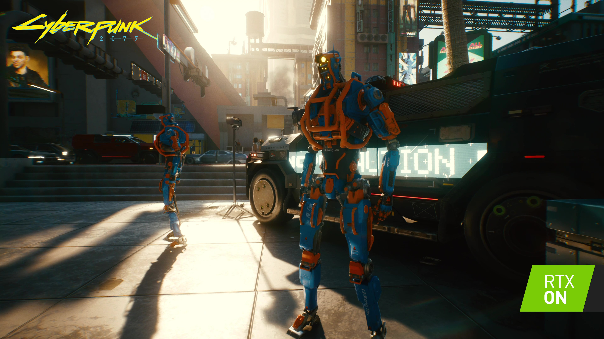

By Andrew Burnes on September 01, 2020 | Featured StoriesCyberpunk 2077GeForce RTX GPUsNVIDIA DLSSNVIDIA RTXRay Tracing
Here at NVIDIA we’ve unveiled our new GeForce RTX 30 Series graphics cards, the world’s fastest, most powerful GPUs. They’re loaded with groundbreaking features and will deliver the highest-quality experiences. Using the very best technology available, the new GPUs make stunning high resolution, high framerate ray-traced experiences a reality.
With blistering performance and an incredible feature set, GeForce RTX 30 Series GPUs will give PC gamers an unforgettable experience in Cyberpunk 2077. There’ll be several ray-traced effects that add stunning cutting-edge visuals, and NVIDIA DLSS will accelerate framerates using AI and the Tensor Cores found exclusively on GeForce RTX GPUs.
To demonstrate the possibilities of GeForce RTX 30 Series GPUs in Cyberpunk 2077, we’ve captured a new max-setting, RTX ON, 4K trailer. This slice of visual nirvana gives you a glimpse of the experience that you can enjoy later this year when gaming on the world’s fastest GPUs.
Cyberpunk 2077 GeForce RTX 30 Series Trailer: 4K, Ultra Settings, RTX ON!

RTX 3000 series
“Cyberpunk 2077 is a technologically advanced game capable of generating marvelous visuals. It also boldly spearheads the future of real-time graphics by taking advantage of GeForce RTX 30 Series’ 2nd generation ray tracing and the advanced AI of NVIDIA DLSS. Simulated reflections, lifelike shadows, and true-to-form diffuse illumination and ambient occlusion -- they all make my heart beat faster and I hope everyone will share that feeling when the game's out in November.” - Jakub Knapik, Art Director of Lighting and FX, CD PROJEKT RED”

NAUGHTY DOG, LLC.
Privacy Policy | Terms of Use
Copyright © 2020 Sony Interactive Entertainment LLC.
Facebook
Instagram
Twitter
Next gen by Nvidia
Cyberpunk 2077 with all ray tracing effects and DLSS will also be playable via GeForce NOW, NVIDIA's game streaming service that delivers real-time gameplay from world-class NVIDIA GPUs in the cloud. Using the GeForce NOW app on PC, Mac, SHIELD TV, Android devices and now Chromebooks, gamers can play their favorite PC titles already purchased from popular digital stores like Steam, Epic Games Store and Uplay. And because these are real PC games, GeForce NOW members experience their titles the way you intended, with and against millions of other PC players, at 1080p 60 FPS.
Privacy Policy | Terms of Use